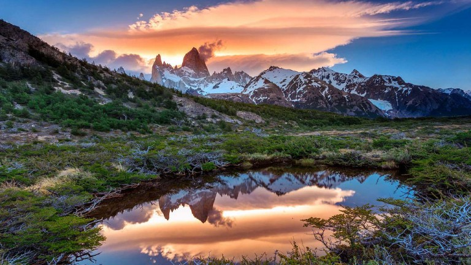
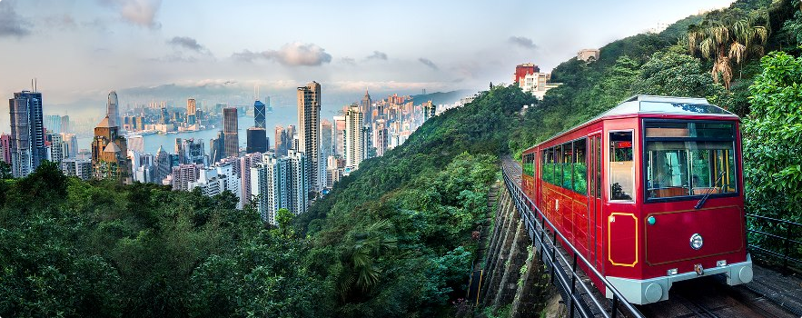
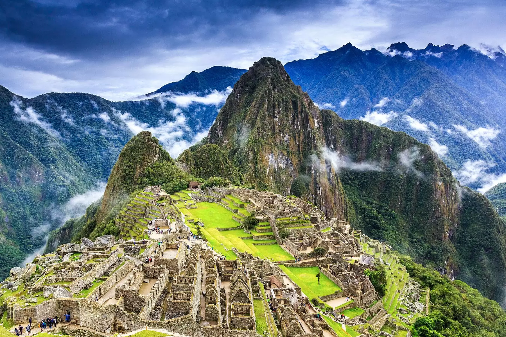
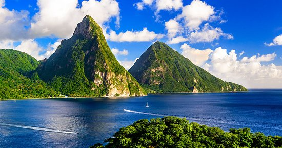
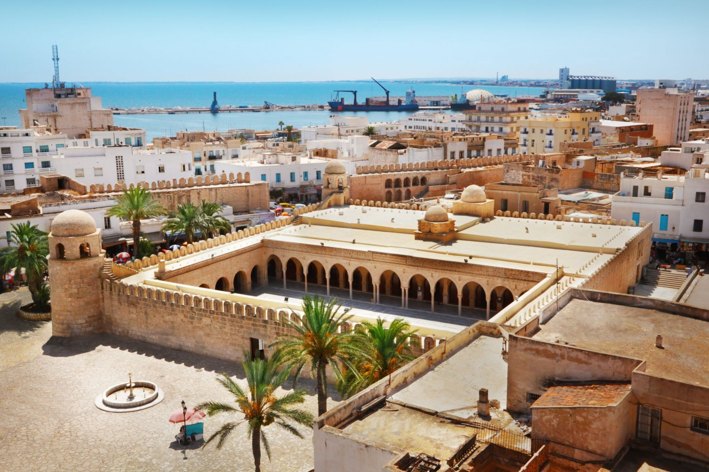

TOP 30 BEAUTIFUL PLACES THAT YOU WOULD LOVE TO VISIT
1)paris
Every day, the magnetic City of Light draws visitors who travel from around the globe to see iconic attractions like the Eiffel Tower, the Louvre and Notre Dame in real life. But what travelers really fall in love with are the city's quaint cafes, vibrant markets, trendy shopping districts and unmistakable je ne sais quoi charm.

2) Yellowstone
Considered by many to be a rite of passage for any American, a visit to Yellowstone will leave you in awe of nature's power. Marvel at the kaleidoscopic waters of the Grand Prismatic Spring, catch the hourly show put on by Old Faithful, hike along the Grand Canyon of the Yellowstone or simply relax with a picnic at Yellowstone Lake.

3) Rome
When you visit the Eternal City, prepare to cross a few must-see attractions – the Colosseum, the Trevi Fountain and the Pantheon, to name a few – off your bucket list. Additional treasures like St. Peter's Basilica and the Sistine Chapel can be found in nearby Vatican City. Escape the tourist crowds with a twilight stroll through the cobblestone streets of Trastevere.

4) Tahiti
Travel to this island – the largest in French Polynesia – if you've been dreaming of a vacation spent lazing in a luxurious overwater bungalow. Beyond the posh resorts, Tahiti boasts black sand beaches, prime snorkeling and surfing conditions, and a bustling capital. The easiest (and cheapest) way to experience this paradise is on a cruise.
>
5) London
London is a world unto itself. The eclectic neighborhoods, which house a blend of historic landmarks and modern-day attractions, can keep you occupied for days. If it's your first time, don't pass up a visit to the Tower of London, Buckingham Palace or the British Museum before sitting down to a classic afternoon tea.

6)South Island, New Zealand
Mountains, fjords, glaciers … New Zealand's South Island brims with majestic landscapes at every turn. Indulge your inner daredevil in Queenstown, explore two of the most accessible glaciers in the world on the West Coast, sample delicious food and wine in Marlborough, or kayak your way through the glacier-carved Milford Sound.

7)Phuket
Located in southern Thailand, Phuket offers something for everyone, especially budget-minded travelers. Everything from accommodations to spa treatments and boat tours come with a low price tag. For stunning scenery, check out the limestone cliffs of Phang Nga Bay and the beaches of the Phi Phi Islands. Other must-sees include Wat Chalong Temple and the Big Buddha.
8)Grand Canyon
Measuring roughly 277 river miles long and 18 miles wide, the Grand Canyon offers plenty of outdoor activities for adventure junkies. Hike along the popular Rim and Bright Angel trails for unparalleled views of the rust-colored landscape, or cool off with a whitewater rafting excursion down the Colorado River.

9)Dubai
Stunning Persian Gulf views, heart-pumping activities and historic landmarks await in Dubai. This Middle Eastern city is filled with one-of-a-kind attractions, including the Burj Khalifa, the Dubai Mall, and the indoor Ski Dubai. But the city still holds onto its heritage, as seen in the Bastakiya Quarter and traditional gold and spice souks.

10)New York City
New York City hosts infinite urban adventures: You can wander through Central Park, tour the exhibits at the Met, catch a Broadway show or peruse SoHo's stylish boutiques. And at night, admire Manhattan's glittering skyscrapers from the top of the Empire State Building or the rooftop bar of your trendy boutique hotel.

11)Argentine Patagonia
If you consider yourself an adventurous traveler, you've found your match in Argentine Patagonia. Otherworldly landscapes await you in Southern Patagonia, while endangered species (think: Magellanic penguins) roam Peninsula Valdés – a UNESCO World Heritage site. Another must-see: Perito Moreno, one of the only glaciers in the world that is growing, not shrinking.

12)Barcelona
This city is a feast for the eyes: Visitors can walk past medieval architecture in the Barri Gòtic, snap photos of the intricate La Sagrada Família and marvel at Gaudí's whimsical creations in Güell Park. Meanwhile, Las Ramblas buzzes at all hours while La Barceloneta Beach is the perfect place to pass the time on a hot day.
13)Yosemite
Year after year, millions travel to Yosemite National Park to stand in awe of natural wonders like Glacier Point and the Tunnel View Outlook. Hit the hiking trails early in the day to avoid crowds looking for the perfect photo op. To save some serious coin, skip the hotel and camp out for the full experience (just be sure to book your spot well in advance).
14)Santorini
Frequently touted as a top honeymoon destination, this Greek isle woos newlyweds every year with its breathtaking sunsets, pastel-hued villages and colorful beaches. Archaeological sites, such as Ancient Thira and Ancient Akrotiri, beckon to history buffs, while central Santorini's winery tours lure oenophiles. For a relaxing daytrip, hop on a boat to Thirassia
15)Maui
Whether you're driving along the Road to Hana, enjoying a bird's-eye view of the lush coastline from a helicopter or simply relaxing on the island's honey-colored beaches, you'll find that Maui is unlike any other tropical destination. Don't miss a chance to visit Haleakala National Park, home to the world's largest dormant volcano.

16)Sydney
This metropolis offers more than just a dizzying array of landmarks (e.g., the Sydney Opera House, Sydney Harbour and the Sydney Harbour Bridge). The Australian city boasts a warm, sunny climate ideal for enjoying Sydney's long list of seasonal festival and events, not to mention its local beaches like Coogee, Bondi and Manly.
17)Hong Kong
Hong Kong is a study in contrasts. Alongside its towering skyscrapers and frenzied street markets, there's the peaceful Nan Lian Garden and the scenic Tsim Sha Tsui Promenade. For a mix of both, hop a ferry to Lantau Island, home to a Buddhist monastery, Hong Kong's longest beach and the territory's Disneyland outpost.

18)Machu Picchu
A visit to the "lost city of Incas" is not for the faint of heart, but for those who acclimate to the altitude it's life-changing. While the four-day hike along the Inca Trail is challenging, arriving at the site during sunrise is well worth it, according to past travelers. If you're not up for the trek, you can also hop on a tourist train to the mountain base.

19)Rio de Janeiro
Christ the Redeemer and the shores of Copacabana and Ipanema provide reason enough to plan a trip to Rio, but there's much more to the Marvelous City than scenic vistas, tropical rainforests and cerulean seas. Revel in the sounds of samba in the Lapa neighborhood after strolling along the cobblestone streets of Santa Teresa.

20)Florence
The historic city of Florence offers plenty of world-famous attractions, including the Duomo, Piazzale Michelangelo and Piazza della Signoria. After appreciating the city's Renaissance architecture and art, sample some of the region's delectable Tuscan food and wine at the city's quaint cafes, gelato shops and ristorantes.
21)British Virgin Islands
If picturesque beaches and warm weather are what you're after, look no further than the British Virgin Islands. For easy access to Smuggler's Cove, Brewers Bay and other top-notch BVI beaches, consider booking your hotel room on Tortola, the area's largest island. Plus, you can easily hop between the smaller islands on a boat tour.
22)Costa Rica
From volcanic mountains to verdant rainforests to stunning shorelines, Costa Rica is one of the best kept secrets in Central America – but not for long. Explore the beaches along the Nicoya Peninsula before heading to the remote Tortuguero National Park to spot exotic wildlife. Just make sure you plan a visit during the country's dry season (mid-December to April).
23)Bali
Serene temples and beautiful beaches are the biggest draws to this lush paradise. And we do mean lush – the region's notoriously soggy wet season is best avoided by planning a visit between April and October. Break up your beach time with a visit to Kintamani, home to a towering (and active) volcano and a large lake.
24)St. Lucia
Dotted with luxurious boutique hotels, this Caribbean destination is tailor-made for lovebirds and adrenaline junkies. Those in search of relaxation will find it on the island's unspoiled shorelines (specifically Reduit and Anse Chastanet), while adventure seekers test their limits climbing the Pitons or zip lining through the Chassin region's rainforest.

25)Great Barrier Reef
The globe's largest coral reef system – and one of the original Seven Natural Wonders of the World – touts incredible scenery, whether you view it underwater, from the air or by boat. Though plenty of diving and snorkeling spots can be found along Queensland's coast, to escape the crowds, take an excursion to Hamilton Island.
26)Banff
Nestled among the Canadian Rockies, this national park boasts some of the world's most beautiful vistas. Admire sweeping views of the Bow River Valley from the Banff Gondola or while schussing the slopes at the park's three ski resorts. If you're visiting in the summer, don't miss the chance to canoe across the crystal-clear waters of Moraine Lake.

27)Amalfi Coast
Few places in the world can rival the natural beauty found along the Amalfi Coast. This region along the southern edge of Italy's Sorrentine Peninsula is home to 13 quaint towns etched into seaside cliffs. Among the pastel-hued fishing villages, you'll find upscale hotels and resorts, plus lots of delectable Italian food that ranges from rustic to refined.
28)Prague
With its Gothic, Renaissance and Baroque architecture adorning top attractions like Old Town Square, Prague Castle, St. Vitus Cathedral and the Prague Astronomical Clock, Prague makes travelers feel like they're in a fairy tale. Make sure to visit the popular Charles Bridge and touch one of the 30 saint statues for luck.
29)Maldives
It's not cheap or easy to reach, but this isolated paradise between the Arabian and Laccadive seas is the personification of a dreamy tropical vacation. Here, thatched-roof bungalows straddle crystal-clear aquamarine waters, and beach trips and spa treatments are the only items on the agenda. If cabin fever sets in, pay a visit to the capital, Male'

30)Tunisia
It may be but a slim wedge of North Africa’s vast horizontal expanse, but Tunisia has enough history and diverse natural beauty to pack a country many times its size. With a balmy, sand-fringed Mediterranean coast, scented with jasmine and sea breezes, and where the fish on your plate is always fresh, Tunisia is prime territory for a straightforward sun-sand-and-sea holiday. But beyond the beaches, it’s a thrilling, underrated destination where distinct cultures and incredible extremes of landscape – forested coastlines, Saharan sand seas in the south – can be explored in just a few days.

reurrn to the main page